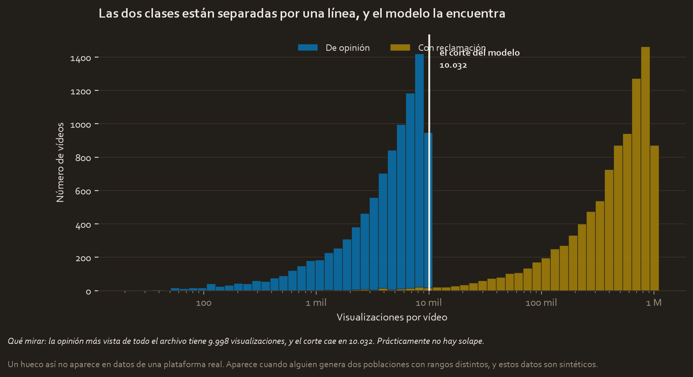
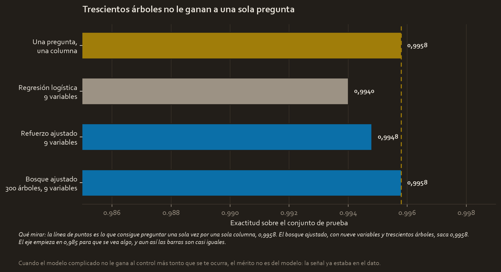
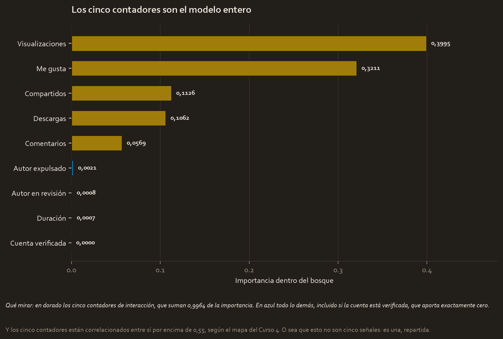
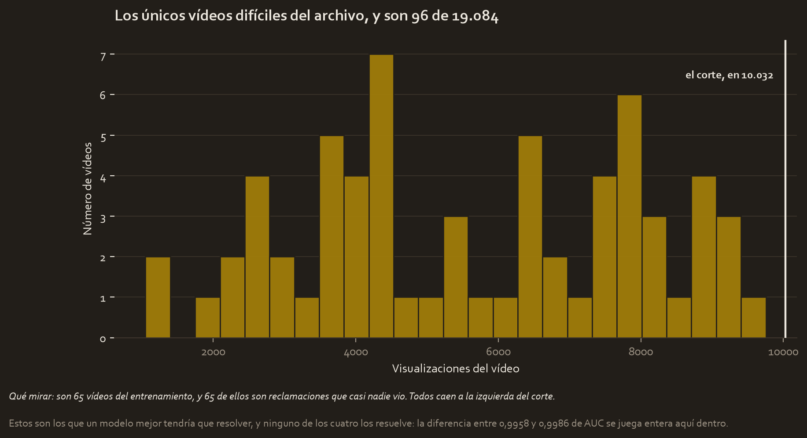

El encargo
TikTok quiere reducir la cola de reclamaciones que esperan revisión humana. El objetivo se anunció en el Curso 2 y es este: clasificar automáticamente si un vídeo contiene una reclamación o una opinión.
Este es ese modelo. Y la mitad del proyecto no va de construirlo, va de averiguar quién hizo el trabajo.
La pregunta
¿Se puede decidir automáticamente si un vídeo es una reclamación? Y si sale bien, ¿lo hizo el modelo o ya estaba hecho?
Los datos
tiktok_dataset_raw.csv, 19.382 vídeos. Las mismas 298 filas incompletas que encontró el Curso 2 se eliminan por la misma razón, así que quedan 19.084.
Y una diferencia con el Curso 4 que vale la pena mirar. Aquel proyecto predecía si la cuenta estaba verificada, con un reparto de 93,6 % contra 6,4 %, así que tuvo que submuestrear y no podía fiarse de la exactitud. Aquí el objetivo está al 50,3 % contra 49,7 % y no hay que equilibrar nada.
Mismos datos, problema opuesto: el desbalance no es una propiedad del archivo, es una propiedad de la pregunta que le haces.
El control, fijado antes de mirar nada
El Curso 2 ya había medido que una reclamación se ve 101 veces más que una opinión, con los dos repartos casi sin solaparse. Con esa señal, cualquier modelo va a salir casi perfecto, así que un resultado por encima del 99 % no será un éxito: será una confirmación.
Por eso, antes de entrenar nada, se dejó fijado un modelo de comparación deliberadamente ridículo: un árbol de una sola pregunta sobre una sola columna, las visualizaciones. La regla entera que aprendió cabe en una línea:
Si el vídeo pasa de 10.031 visualizaciones, es una reclamación.
Con eso solo acierta el 99,61 % en validación.
Decidir después qué cuenta como buena referencia es cómo un proyecto se convence a sí mismo de ser impresionante. Se decide antes.
Lo que mostró la exploración

| La opinión más vista de todo el archivo | 9.998 visualizaciones |
| El corte que eligió el modelo | 10.031 visualizaciones |
| La reclamación menos vista | 1.049 visualizaciones |
Las dos clases están separadas por una línea, y por eso cualquier algoritmo la encuentra. No hizo falta aprendizaje automático: hacía falta ordenar una columna.
El modelo, y por qué este modelo
Partición en tres, 60/20/20 estratificada, con la prueba apartada desde el principio: 11.450 de entrenamiento, 3.817 de validación y 3.817 de prueba.
Cuatro familias medidas en validación, y luego búsqueda en rejilla con validación cruzada de cuatro pliegues para las dos de árboles: 24 combinaciones en 38 segundos para el bosque y 12 en 6 para el refuerzo. El campeón, elegido en validación, fue el bosque ajustado con 0,9979 de AUC.
La comparación
Sobre la prueba, mirada una sola vez, con el control dentro de la tabla:

| Modelo | Variables | Exactitud | AUC |
|---|---|---|---|
| Una pregunta, una columna | 1 | 0,9958 | 0,9958 |
| Regresión logística | 9 | 0,9940 | 0,9973 |
| Refuerzo ajustado | 9 | 0,9948 | 0,9979 |
| Bosque ajustado, 300 árboles | 9 | 0,9958 | 0,9986 |
Nueve variables y trescientos árboles aportan exactamente 0,0000 de exactitud sobre una sola pregunta. La regresión logística, con las nueve, saca menos.
El AUC sí mejora, de 0,9958 a 0,9986, y eso es real: el bosque ordena mejor los casos dudosos. Pero a la hora de decidir, que es lo que se despliega, no mejora nada.

La importancia lo dice desde otro sitio: los cinco contadores de interacción son el modelo entero, y si la cuenta está verificada aporta exactamente cero. Y esos cinco contadores correlacionan entre sí por encima de 0,55, según se midió en el Curso 4, así que no son cinco señales: son una repartida.
El resultado, traducido
Aquí está la parte incómoda, y va antes que el número.
Un hueco así no existe en una plataforma real. Ningún vídeo de opinión de TikTok tiene un techo de diez mil visualizaciones. Aparece cuando alguien genera dos poblaciones sacándolas de rangos distintos, y estos datos son sintéticos, creados por TikTok para el certificado.
Un modelo con 99,58 % sobre este archivo ha medido cómo se generó el archivo, no cómo se comporta la plataforma.
El Curso 2 ya declaraba los datos como sintéticos en sus limitaciones. Esto es lo que esa limitación cuesta cuando intentas construir encima.

Y los únicos vídeos con algo que aprender son 65 de 11.450, todos del mismo tipo: reclamaciones que casi nadie vio, por debajo del corte. La distancia entre 0,9958 y 0,9986 de AUC se juega entera ahí dentro, y ninguno de los cuatro modelos los resuelve.
Qué se decide con esto
- No desplegar esto como clasificador de contenido. Lo que aprendió es un umbral de visualizaciones que solo existe en el archivo de prácticas.
- Usar la regla de una pregunta como referencia obligatoria en cualquier trabajo futuro sobre estos datos. Si un modelo nuevo no le gana, no ha aportado nada.
- Quedarse con lo que sí enseña: cómo se compara contra un control, cómo se ajusta con validación cruzada y cómo se lee la importancia de variables.
- Si esto fuera un encargo real, pedir datos reales antes que ninguna otra cosa.
Limitaciones
- Los datos son sintéticos. Es la limitación principal y contamina la conclusión de negocio, no los métodos.
- Los cinco contadores están correlacionados entre sí por encima de 0,55. No son cinco señales independientes.
- La prueba se miró una vez, después de elegir campeón en validación.
- El control es un árbol de una pregunta, o sea lo más simple posible. Que un modelo no le gane a eso no significa que ningún modelo pueda: significa que **con estos datos no hay margen** por encima del 99,6 %.
Material completo
Los tres se construyeron aquí. Los CSV se leen de tu carpeta del Curso 3 sin tocarlos, y el proyecto de Waze reparte los datos exactamente igual que el del Curso 4 para que la comparación entre los dos valga.
Informes y notas
- pace_plan.md 04_reports/pace_plan.md 3.6 KB
- executive_summary.md 04_reports/executive_summary.md 4.6 KB
- model_results.json 04_reports/model_results.json 2.8 KB
Código
- tiktok_trees.py 02_scripts/tiktok_trees.py 21.6 KB
- tiktok_curso5.ipynb tiktok_curso5.ipynb 13.0 KB